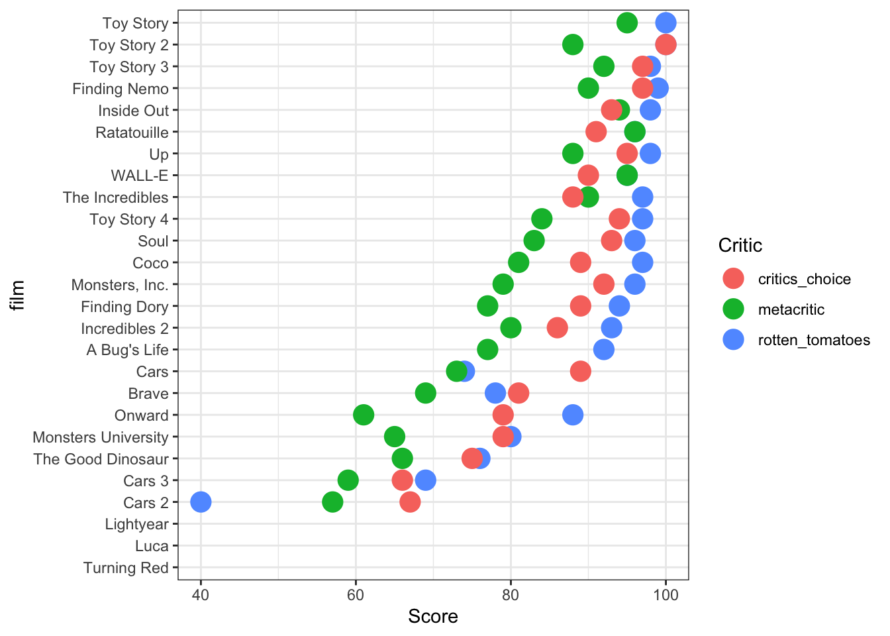
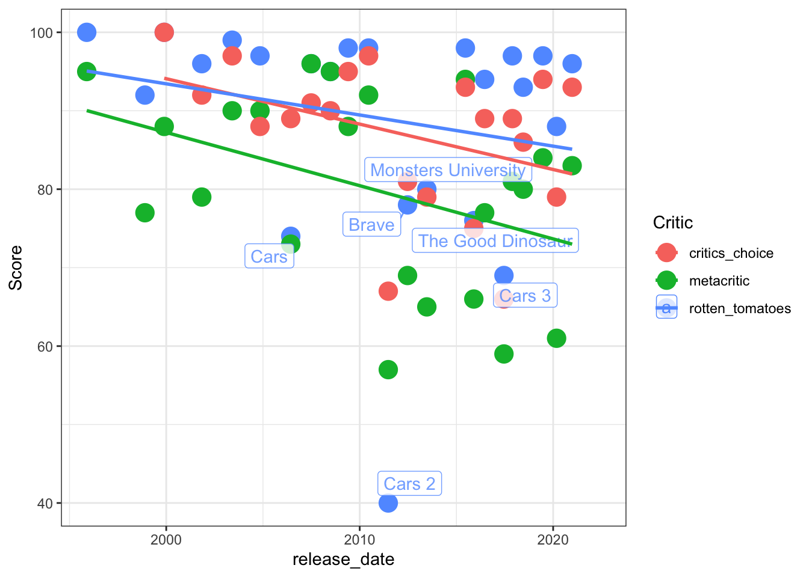
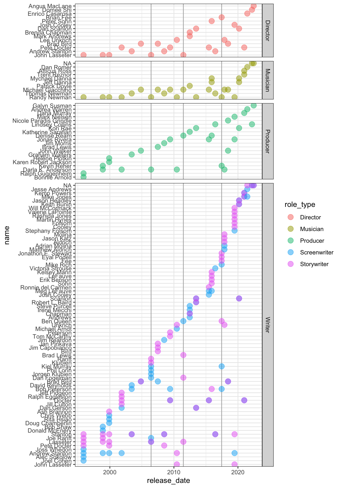

pixar_films <- readr::read_csv('https://raw.githubusercontent.com/rfordatascience/tidytuesday/main/data/2025/2025-03-11/pixar_films.csv')
public_response <- readr::read_csv('https://raw.githubusercontent.com/rfordatascience/tidytuesday/main/data/2025/2025-03-11/public_response.csv')
library(dplyr)
library(ggplot2)
library(tidyr)
library(lubridate)
knitr::opts_chunk$set(warning = FALSE, message = FALSE)Screencast - edited script
slides
Project
Week12
Week13
Script from the screencast
For the screencast itself, check the canvas course for the zoom recording for April 15.
This script originated as the code from the screencast during class, and was edited for clarity afterwards. The figure captions were similarly added afterwards.
Thing 1: Inspect the data sets
The goal of inspecting the data is to check that
- all variables have the correct type (dates, factors, numbers, …), and
- missing values are encoded as
NA
head(pixar_films)# A tibble: 6 × 5
number film release_date run_time film_rating
<dbl> <chr> <date> <dbl> <chr>
1 1 Toy Story 1995-11-22 81 G
2 2 A Bug's Life 1998-11-25 95 G
3 3 Toy Story 2 1999-11-24 92 G
4 4 Monsters, Inc. 2001-11-02 92 G
5 5 Finding Nemo 2003-05-30 100 G
6 6 The Incredibles 2004-11-05 115 PG summary(pixar_films) number film release_date run_time
Min. : 1.0 Length:27 Min. :1995-11-22 Min. : 81.0
1st Qu.: 7.5 Class :character 1st Qu.:2006-12-18 1st Qu.: 95.0
Median :14.0 Mode :character Median :2013-06-21 Median :100.0
Mean :14.0 Mean :2012-06-15 Mean :104.8
3rd Qu.:20.5 3rd Qu.:2018-12-17 3rd Qu.:106.0
Max. :27.0 Max. :2023-06-16 Max. :155.0
NA's :2
film_rating
Length:27
Class :character
Mode :character
Fix some of the encoding for missing values and introduce factor variables. Remove the movie that doesn’t have a title.
pixar_films %>% filter(film_rating %in% c("N/A", "Not Rated"))# A tibble: 4 × 5
number film release_date run_time film_rating
<dbl> <chr> <date> <dbl> <chr>
1 24 Luca 2021-06-18 151 N/A
2 25 Turning Red 2022-03-11 NA N/A
3 26 Lightyear 2022-06-17 NA N/A
4 27 <NA> 2023-06-16 155 Not Rated pixar_films <- pixar_films %>% mutate(
film_rating = ifelse(film_rating %in% c("N/A", "Not Rated"), NA, film_rating)
)
pixar_films <- pixar_films %>% mutate(
film_rating = factor(film_rating)
) %>% filter(!is.na(film))Now we do the same kind of inspection for the scores. Scores for movies 25 through 27 are missing, and some of the scores are missing throughout.
head(public_response)# A tibble: 6 × 5
film rotten_tomatoes metacritic cinema_score critics_choice
<chr> <dbl> <dbl> <chr> <dbl>
1 Toy Story 100 95 A NA
2 A Bug's Life 92 77 A NA
3 Toy Story 2 100 88 A+ 100
4 Monsters, Inc. 96 79 A+ 92
5 Finding Nemo 99 90 A+ 97
6 The Incredibles 97 90 A+ 88tail(public_response)# A tibble: 6 × 5
film rotten_tomatoes metacritic cinema_score critics_choice
<chr> <dbl> <dbl> <chr> <dbl>
1 Coco 97 81 A+ 89
2 Incredibles 2 93 80 A+ 86
3 Toy Story 4 97 84 A 94
4 Onward 88 61 A- 79
5 Soul 96 83 <NA> 93
6 Luca NA NA <NA> NApublic_response %>% count(cinema_score)# A tibble: 4 × 2
cinema_score n
<chr> <int>
1 A 13
2 A+ 7
3 A- 2
4 <NA> 2public_response <- public_response %>% mutate(
cinema_score = factor(cinema_score)
)pixar_all <- pixar_films %>% left_join(public_response, by = "film")
summary(pixar_all) number film release_date run_time
Min. : 1.00 Length:26 Min. :1995-11-22 Min. : 81.0
1st Qu.: 7.25 Class :character 1st Qu.:2006-09-13 1st Qu.: 95.0
Median :13.50 Mode :character Median :2012-12-21 Median :100.0
Mean :13.50 Mean :2012-01-12 Mean :102.8
3rd Qu.:19.75 3rd Qu.:2018-04-24 3rd Qu.:105.2
Max. :26.00 Max. :2022-06-17 Max. :151.0
NA's :2
film_rating rotten_tomatoes metacritic cinema_score critics_choice
G :13 Min. : 40.00 Min. :57.00 A :13 Min. : 66.00
PG :10 1st Qu.: 84.00 1st Qu.:71.00 A- : 2 1st Qu.: 81.00
NA's: 3 Median : 96.00 Median :81.00 A+ : 7 Median : 89.00
Mean : 89.17 Mean :79.96 NA's: 4 Mean : 87.14
3rd Qu.: 97.50 3rd Qu.:90.00 3rd Qu.: 93.00
Max. :100.00 Max. :96.00 Max. :100.00
NA's :3 NA's :3 NA's :5 Overall: there are a few strange things going on with respect to missing values
- It seems odd that we have a release date, but no title (movie 27)
- missing values only in the last couple of movies (24 - 27) - it seems that some of the data was added manually, but not consistently
Possible to-do item: fix the data in the pixarfilms package by updating the movie information directly from Wikipedia.
Wikipedia has information on 28 movies, titles are included, no ratings, no runtimes though
For now, we just move on with the analysis.
Thing 2: reshape the data
The idea for reshaping is to be able to compare across different scoring sources.
pixar_long <- pixar_all %>%
pivot_longer(cols = c(rotten_tomatoes, metacritic, critics_choice), names_to="Critic", values_to="Score")Based on Figure 1, we see that the Toy Story and Toy Story 2 have the highest ratings based on rotten tomatoes and critics choice. Ratatouille is the movie with the highest rating from metacritic. Cars 2 is the movie with the lowest ratings from rotten tomoatoes and metacritic. The worst movie award from critics choice goes to Cars 3.
pixar_long <- pixar_long %>%
mutate(
film = factor(film),
film = forcats::fct_rev(reorder(film, -Score, mean, na.rm=TRUE))
)
pixar_long %>% summary() number film release_date run_time
Min. : 1.0 Turning Red : 3 Min. :1995-11-22 Min. : 81.0
1st Qu.: 7.0 Luca : 3 1st Qu.:2006-06-09 1st Qu.: 95.0
Median :13.5 Lightyear : 3 Median :2012-12-21 Median :100.0
Mean :13.5 Cars 2 : 3 Mean :2012-01-12 Mean :102.8
3rd Qu.:20.0 Cars 3 : 3 3rd Qu.:2018-06-15 3rd Qu.:105.2
Max. :26.0 The Good Dinosaur: 3 Max. :2022-06-17 Max. :151.0
(Other) :60 NA's :6
film_rating cinema_score Critic Score
G :39 A :39 Length:78 Min. : 40.00
PG :30 A- : 6 Class :character 1st Qu.: 78.50
NA's: 9 A+ :21 Mode :character Median : 89.00
NA's:12 Mean : 85.37
3rd Qu.: 95.00
Max. :100.00
NA's :11 pixar_long %>%
ggplot(aes(y = film, x = Score, colour = Critic)) +
geom_point(size=5) +
theme_bw()

pixar_long %>% filter(Score > 99)# A tibble: 3 × 8
number film release_date run_time film_rating cinema_score Critic Score
<dbl> <fct> <date> <dbl> <fct> <fct> <chr> <dbl>
1 1 Toy Story 1995-11-22 81 G A rotte… 100
2 3 Toy Story 2 1999-11-24 92 G A+ rotte… 100
3 3 Toy Story 2 1999-11-24 92 G A+ criti… 100# wish: add names on the rightThing 3: scores over time
Figure 2 shows pixar movie ratings over time. Since the first release of Toy Story, audiences and film reviewers have become more critical and ratings have generally declined. A logical next step would be to see whether the dip in ratings between 2011 and 2016 is associated with some producer or director at pixar.
pixar_long %>% ggplot(aes(x = release_date, y = Score, colour = Critic)) + geom_point(size = 5) +
ggrepel::geom_label_repel(aes(label = film), alpha = 0.8,
data = pixar_long %>% filter(Critic=="rotten_tomatoes", Score < 85)) +
geom_smooth(method="lm", se=FALSE) +
theme_bw()

Extra Credit :)
The package pixarfilms has an additional dataset on people in different roles involved in each movie.
We will load that information into the pixar_long form, and see whether there is some association with the dip in ratings
library(pixarfilms)
head(pixar_people)# A tibble: 6 × 3
film role_type name
<chr> <chr> <chr>
1 Toy Story Director John Lasseter
2 Toy Story Screenwriter Joel Cohen
3 Toy Story Screenwriter Alec Sokolow
4 Toy Story Screenwriter Andrew Stanton
5 Toy Story Screenwriter Joss Whedon
6 Toy Story Storywriter Pete Docter pixar_ratings <- pixar_long %>% group_by(number, film, release_date, run_time, film_rating, cinema_score) %>% summarize(Avg_Score = mean(Score, na.rm=TRUE))
pixar_long_people <- pixar_ratings %>% left_join(pixar_people, by="film")pixar_long_people %>%
arrange(release_date,role_type) %>%
mutate(name = forcats::fct_inorder(name),
bigger_role = case_when(
role_type %in% c("Screenwriter", "Storywriter") ~ "Writer",
role_type %in% c("Director", "Co-director") ~ "Director",
.default = as.character(role_type)
)) %>%
ggplot(aes(x = release_date, y = name)) +
geom_vline(aes(xintercept=release_date), colour = "grey70",
data = pixar_long_people %>% slice(grep("Cars", film))) +
geom_point(aes(colour = role_type), size=3.5, alpha = 0.5) +
facet_grid(bigger_role~., scale="free", space="free") +
theme_bw()

Figure 3 shows a plot of individuals involved in the making of pixar films. Various patterns become obvious: For writers (story and screen), there is a strong core of individuals who have been involved in the writing since the beginning. In terms of the musical arrangements, we see a lot of stability: Randy Newman has been taking turns with Thomas Newman in composing the music, Michael Giacchino has been involved as a composer for a lot of the pixar movies.